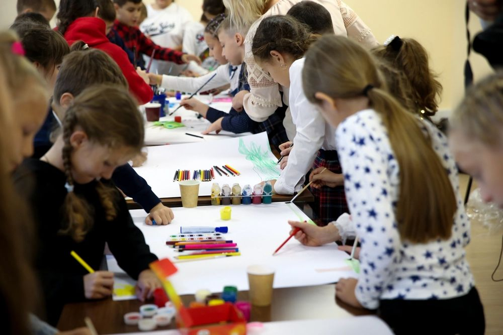
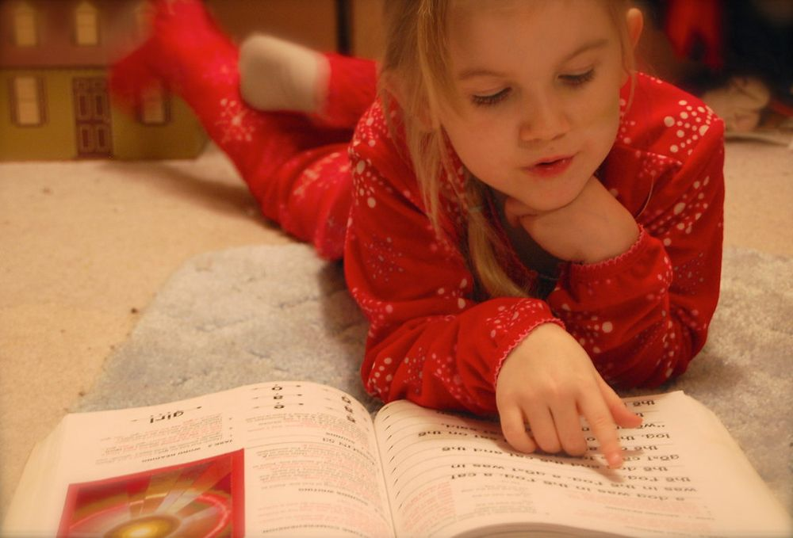

From the Varbok Blog
Why Play Is Serious Learning for Young Children
Ananya Krishnan
Learning
15 Jan 2026
12 Comments
Ask any parent what their child did at preschool today and the answer is often the same: “We played.” For many grown-ups that word can feel a little worrying. Shouldn’t children be learning letters, numbers and getting ready for “real” school? At Varbok we hear this gently voiced concern every week, and our answer is always the same, with a warm smile: for young children, play is the real learning, and it is some of the most serious work they will ever do.
When a toddler stacks blocks until they topple, she is quietly running experiments in balance, gravity, height and cause and effect. When two friends argue over who gets the toy stethoscope in the pretend clinic, they are practising negotiation, empathy and language under real emotional pressure. None of it looks like a lesson, and that is exactly the point. The learning is woven so naturally into the joy that children never feel they are being taught at all.
What is really happening during play

Decades of early-childhood research point in one clear direction: young brains grow through active, hands-on, self-directed experience far more than through worksheets or rote repetition. Play builds the very foundations that formal academics later stand upon. A child who has spent a year sorting buttons, pouring water and matching shapes arrives at maths with an intuitive sense of quantity, pattern and measurement. A child who has acted out a hundred stories in the dress-up corner walks into reading already understanding sequence, character and the simple magic that words carry meaning.
Play also strengthens what educators call executive function: the ability to focus, remember instructions, control impulses and switch between tasks. When children invent the rules of a game, take turns and adjust when a friend wants something different, they are exercising the same mental muscles they will one day use to plan an essay or solve a tricky problem. These are not soft extras. They are the skills that quietly predict how well a child copes, concentrates and thrives in school and far beyond it.
The four kinds of growth in every playful day
At Varbok we design each day so that play gently stretches children across four connected areas of development:
- Cognitive growth — counting, sorting, problem-solving and early literacy, all discovered through blocks, puzzles, sand and storytelling.
- Language and communication — new words, questions and conversations sparked by pretend play, songs and picture books shared in cosy circles.
- Physical development — strong bodies and steady little hands built through climbing, running, threading beads and squeezing dough.
- Social and emotional skills — sharing, patience, kindness and confidence, learned by playing alongside caring friends and gentle, attentive teachers.
How parents can nurture play at home

The good news is that powerful play needs no expensive toys or elaborate setups. A cardboard box becomes a rocket, a spaceship and a cosy cave all in one afternoon. A few pots, a wooden spoon and a little water turn into a busy kitchen. The simplest, most open-ended materials are often the ones that invite the richest imagination, because the child, not the toy, does the thinking.
You can gently support your child’s play by following their lead rather than directing it, by allowing unhurried stretches of free time, and by resisting the urge to correct every “wrong” way of doing things. When you sit on the floor, ask open questions and show genuine delight in their make-believe world, you tell your child that their ideas matter. That quiet message of trust is the soil in which curiosity, confidence and a lifelong love of learning take root.
So the next time your little one comes home muddy, paint-splashed and bursting with stories about the games they played, you can feel proud rather than anxious. They have not simply been kept busy. They have been thinking, feeling, creating and growing in the most natural way a young child can. At Varbok, that is what we mean when we say every child deserves a childhood that is felt before it is measured.